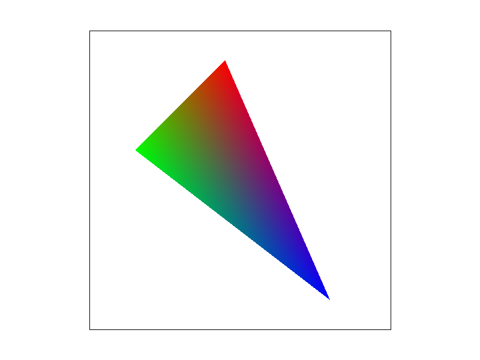

Overview
Give a high-level overview of what you implemented in this project. Think about what you've built as a whole. Share your thoughts on what interesting things you've learned from completing the project.
Through assignment 1, we built a simple rasterizer that enables us to draw triangles (via normal/super sampling), perform transformations (under harmonious coordinate systems), apply barycentric coordinates, and allow texture mapping using different sampling techniques and mipmap levels. As a result, our project can take in an SVG file, and render the corresponding images on our GUI screen.
The project was very interesting to implement, because during lectures, we learnt the theory and foundations behind computer graphics. They are relatively abstract to me. However, when we actually had the chance to write code for supersampling, and seeing how jaggies went away for the images we rendered, we were truly amazed by the power of the technique. Moreover, “texture mapping” sounds like an extremely complicated task where you have to transform the coordinates, find and interpolate the appropriate mipmap levels, and use nearest pixel/linear interpolation to generate the target pixel. When I see a “flat” texture and an unsmooth surface, I have no idea how to calculate the mapping formula. Yet, after carefully reviewing the slides and performing the implementation, I gradually understood the steps involved and the calculations associated.
Section I: Rasterization
Part 1: Rasterizing single-color triangles
I rasterize the triangle by:
- Finding the rectangle box that perfects bounds the triangle
-
Checks every sample within the box by using the center coordinate of the pixel and determine whether it is inside the triangle using three line tests
-
[Challenges: At first, I noticed that some triangles were colored while others were not. So I wrote out the math corresponding to my code, and realized that there are “clockwise” triangles and “counterclockwise” triangles. So I would need to incorporate both triangles that passed all three line tests, and triangles that didn’t pass any of the tests.]
- For each sample within the triangles, we fill in the pixel with the corresponding color
Our algorithm is no worse than the one that checks each sample within the bounding box because this is the algorithm we implemented.
Part 2: Antialiasing triangles
Supersampling algorithm/data structure:
- Iterate over all the pixels within the bounding box of the triangle
- Calculate the sqrt of the number of samples we need -> “increment”
- Start from the corner of the pixel, and gradually increment/move with step size: 1/increment on both the x and y axes
- For each of the finer samples we collect, we mark on the sample_buffer (I chose to use an 1-D list) if the point is within the triangle
- [Setup of sample_buffer: we need to resize it to width*height*sample_rate, so that we have enough space in the 1-D array to store all the samples we collected]
- Resolve the pixels from sample_buffer to the framebuffer (where we actually fill in the pixels)
- For each element inside the sample_buffer, we convert the variable from type Color to a list of floats corresponding to the r, g, and b value of the pixel
- We mark it onto the rgb_framebuffer_target with the average of the r, g, b values of all samples within the given pixel [The size of the target is width*height*3]
- We fill in the pixel with color according to the rgb_framebuffer_target: Here, color needs to be converted from the float back to a Color type variable
Why is supersampling useful?
Supersampling is useful because it allows us to evaluate at finer details and take the average of the different samples. It allows us to first get a higher resolution picture, and then downsample it, creating smoother pixels and curves (because the intensity of the pixels vary as well)
Modifications to the pipeline:
- Create the image with higher resolution and then downsample it to match the dimension of the screen
- Rely on the help of a sample_buffer: we don’t fill in the pixels directly, but instead first store the values in a buffer, take the average of all samples corresponding to the same pixel, and in the end fill in the pixels
Observations:
We saw significant anti-aliasing effects with super sampling, because we are allowed to color the pixels to have different intensities according to the portion of the pixel that lies inside the triangle. Therefore, we enabled smoother transitions between the pixels, and the graph gets antialiased.|
|
|
|
|
|
Part 3: Transforms
Cubeman is running while pointing forward! This requires him to have his right leg tilting forward, and back lag curled up because he is running. His left arm is also bent, because he is running forward to the right. His right arm stays straight, because while running, he is simultaneously pointing forward.Section II: Sampling
Part 4: Barycentric coordinates
Barycentric coordinates: Expressing each point inside the triangle as a three-element tuple with reference to the three vertices of the triangles. Here, alpha, beta, and gamma act as weights to help us locate a specific point inside the triangle, and they should always sum to 1. This information can be used to interpolate the vertex information across the triangle.|

|

|
Part 5: "Pixel sampling" for texture mapping
Background:
Pixel sampling refers to the process of determining the color of a pixel in screen space by sampling its values from the underlying image. This technique is often used for texture mapping, which involves mapping a 2D image onto a 3D surface, which is what we implemented here. We implemented two versions, both nearest and bilinear pixel sampling methods, to determine the color of each pixel on the 3D surface. The nearest pixel sampling method, also known as nearest neighbor interpolation, simply chooses the color of the closest texel (texture element) to the sample point. This method is fast, but it can result in a "blocky" or pixelated appearance when the texture is magnified. The bilinear pixel sampling method, on the other hand, uses the weighted average of the four closest texels to the sample point via LERPing. This method provides smoother results as it takes into account the surrounding texel values and blends them together. However, it is computationally more expensive than nearest neighbor interpolation.Observations:
As you can see in Figures 9-12 below, bilinear sampling hides the aliasing evident in the nearest neighbor sampling images. Supersampling improves the quality of both sampling methods. In theory, the largest differences between the two methods should be most prominent when the screen space is magnified relative to the texture space (i.e. small L metric) at the sample point. Then the nearest-neighbor approach will effectively magnify the pixelation in texel space into screen space since 1 texel maps to multiple pixels under a magnification regime.|
|
|
|
|
|
Part 6: "Level sampling" with mipmaps for texture mapping
Background:
Level sampling refers to the process of selecting the level of detail to use throughout a texture during texture mapping and minification. This is important because different parts of a 3D model may be viewed at different distances, requiring different levels of detail in the textures used for mapping. Mipmaps formulate a collection of downsampled (texel-averaged) textures from which sensible texel values can be passed back to screen space pixels. The process for identifying the proper mipmap level to retrieve texel values from for a given pixel in screen space is called level sampling. Fundamentally, I implemented level sampling by using the columns of the map's Jacobian matrix. The magnitude of the column vectors of the Jacobian provide an approximate measure of the local pixel footprint in texture space. From this information, we are able to calculate which mipmap level is best suited to color a certain part of screen space based on the degree of minification induced by the map at that local region.Tradeoffs:
Pixel Sampling:- Speed: Nearest neighbor interpolation is faster than bilinear interpolation since it requires less computation.
- Memory Usage: Both methods have similar memory requirements as they both require the same texture data to be stored.
- Antialiasing Power: Bilinear interpolation provides better antialiasing compared to nearest neighbor interpolation since it blends the colors of surrounding texels, resulting in smoother textures.
- Speed: Level sampling is generally faster than both pixel sampling methods since it uses the appropriate level of detail based on the distance from the camera, and therefore, reduces the amount of computation required.
- Memory Usage: Level sampling requires more memory compared to pixel sampling because it requires the mipmap hierarchy to be stored in memory.
- Antialiasing Power: Level sampling provides good antialiasing results because it adjusts the level of detail based on the distance from the camera, and therefore, reduces the visibility of pixelation.
- Speed: Increasing the number of samples per pixel will reduce antialiasing, but will increase computation time, as more samples need to be calculated.
- Memory Usage: The number of samples per pixel does not have a significant impact on memory usage.
- Antialiasing Power: Increasing the number of samples per pixel will improve antialiasing since more samples will be used to determine the color of each pixel, making in a smoother image.
|
|
|
|
|
|
Section III: Art Competition
If you are not participating in the optional art competition, don't worry about this section!